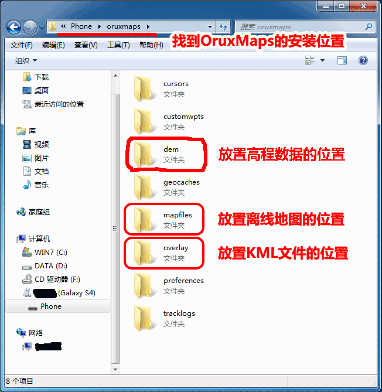
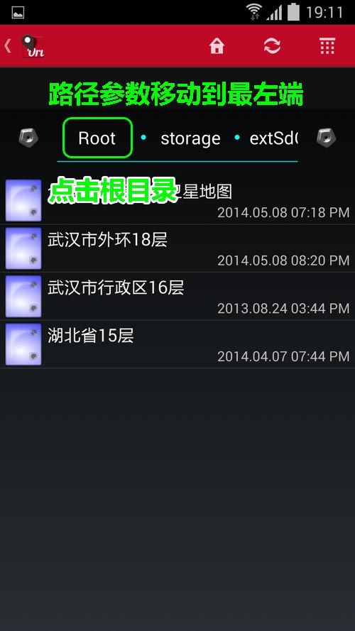
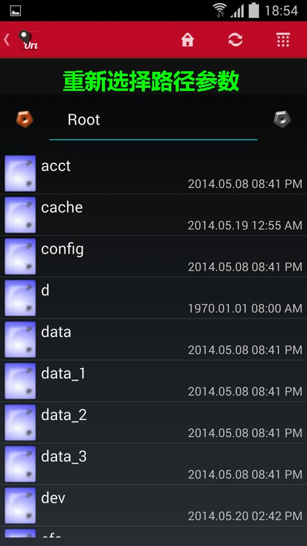
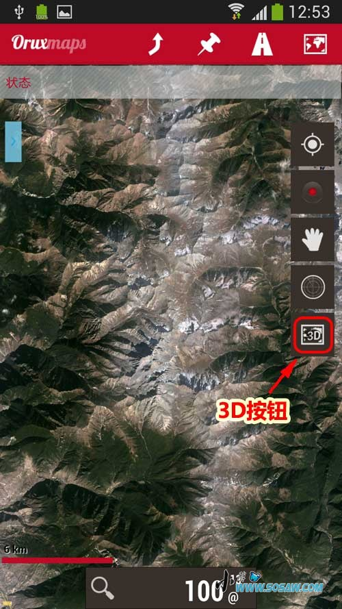
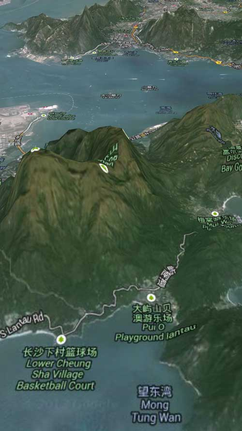

|
| 首页 | GeoTIFF | 今日花园Maps | OruxMaps | OZI | 资源 | 软件 | 联系 |
| 当前位置：OruxMaps ---> OruxMaps安装高程数据并显示三维卫星地图 |
OruxMaps安装高程数据并显示三维卫星地图OruxMaps在使用离线卫星地图时，如果把某一地区的高程数据添加到OruxMaps的DEM目录中，就能显示该地区的三维卫星地图。凡在本站购买OruxMaps离线卫星地图的，加5元可购买该地区的高程数据文件。OruxMaps高程数据的安装方法： 1）将后缀为.hgt的高程数据文件复制到OruxMaps指定的DEM目录中，如下图所示： |

|
2）也可以把高程数据放置到别的地方，例如把高程数据放置到TF卡上。这时就要设置高程数据文件夹的路径参数，如下图所示。 |


|
更改路径参数方法如下图所示： |



|
路径参数更改好后，长按最后一个文件夹名称保存参数，如下图所示： |

|
3）点击右侧“3D”按钮，显示三维卫星地图，双指滑动可调节视角和方位，但此时不能调整地图的层级。如下图所示： |




| www.todaygarden.net |
版权所有 2010-2020 今日花园 |